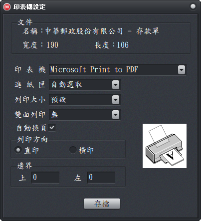

印表機設定
上傳日期：113-2-28 首頁
文件要指定印表機才能套印，並配合印表機的特性執行相關設定，例如設定邊界距離、文字列印方向、並經由反覆測試及調整，才能正確執行套印。
- 文件：顯示目前要執行印表機設定的文件及相關資料。
- 印表機相關設定：
- 印表機：指定用於列印此文件的印表機。
- 進紙匣：例如手動進紙匣。
- 列印大小：預設。(參照作業系統印表機的設定值)
- 列印期間出現紙張不符的訊息：
- 將列印大小改為「自訂」(不一定有效)。
- 從印表機關實體或作業系統印表機的設定，將紙張大偵測功能關閉。
- 自訂紙張大小：由作業系統中的「裝置和印表機」選擇您的印表機後，執行「自訂紙張大小」。
- 雙面列印：預設為單面
- 自動換頁：連續套印時換頁異常時，可以設定此功能。
- 列印方向：讓列印內容以直印(印表機的預設選項)或橫印(將列印文字轉90度)的方式進行列印。
- 邊界：為配合印表機的特性，或需要將整體列印內容往某個方向偏移。類似word(文書處理軟體)的邊界功能。

印表機設定視窗–表格設定工作頁